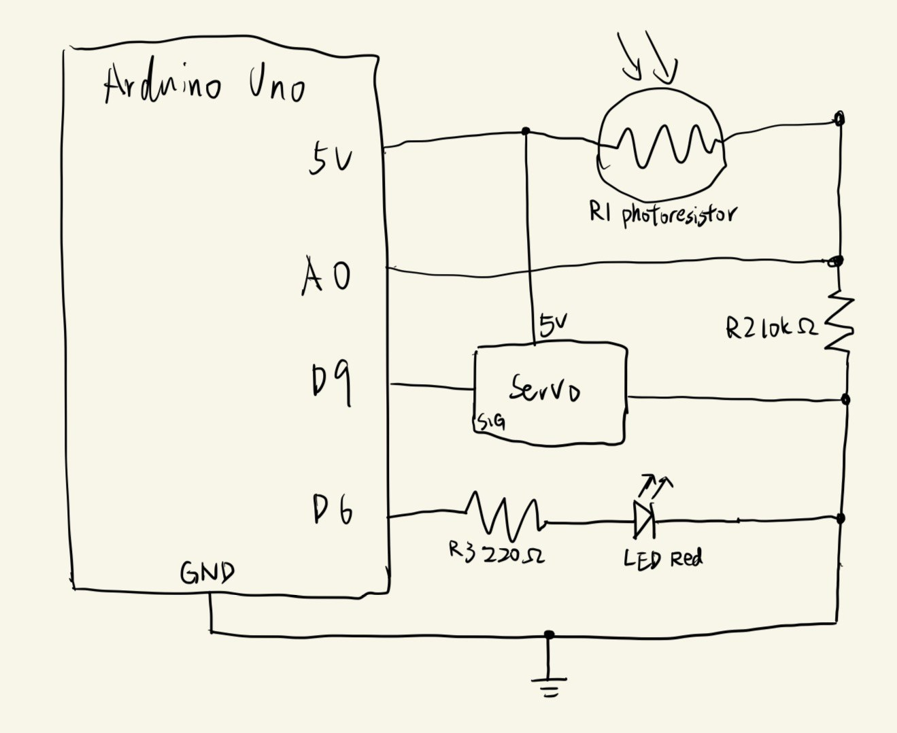
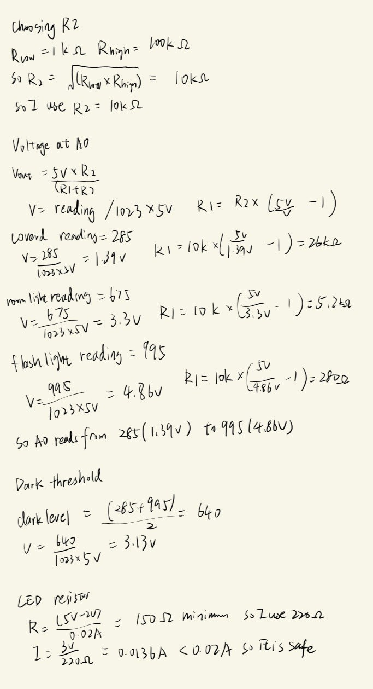
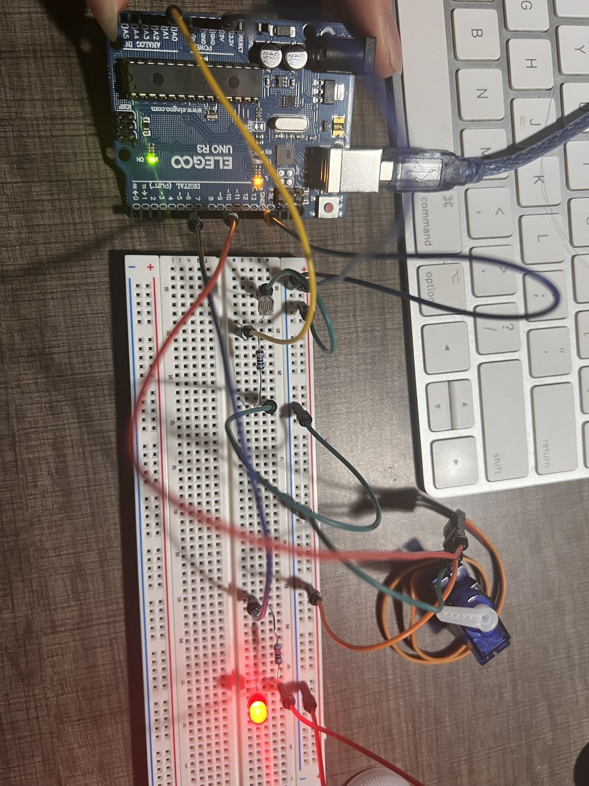
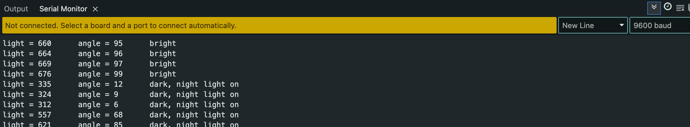
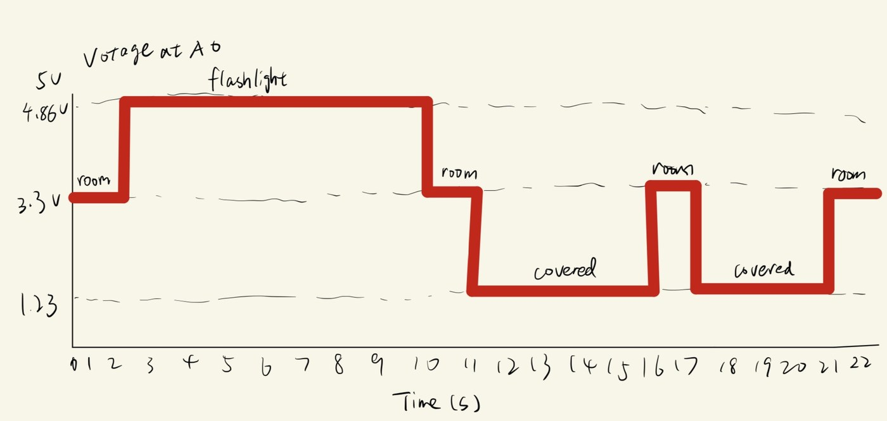

For this smart home prototype, a photoresistor senses how bright the room is. A servo works like a light gauge: the brighter the room, the further it turns. A red LED works like a night light: the darker the room, the brighter it gets.


constrain() and map(). The dark threshold
640 is halfway between them.

The servo part is based on the Arduino "Knob" example (File > Examples > Servo > Knob).
// include the servo library
#include <Servo.h>
// create a servo object
Servo myServo;
// lowest sensor value
int darkest = 285;
// highest sensor value
int brightest = 995;
// sensor value where the room counts as dark
int darkLevel = 640;
// runs once when the Arduino is powered up
void setup() {
// begin serial communication at 9600 baud
Serial.begin(9600);
// attach the servo to pin 9
myServo.attach(9);
// set pin 6 as an output
pinMode(6, OUTPUT);
}
// runs over and over until the Arduino is powered off
void loop() {
// read the analog in value
int val = analogRead(A0);
// limit the sensor value to between 285 and 995
int light = constrain(val, darkest, brightest);
// map it to the range of the servo angle
int angle = map(light, darkest, brightest, 0, 180);
// move the servo to the angle
myServo.write(angle);
// map it to the range of the analog out, reversed
int ledValue = map(light, darkest, brightest, 255, 0);
// change the analog out value
analogWrite(6, ledValue);
// print a string
Serial.print("light = ");
// print the sensor value
Serial.print(val);
// print a string
Serial.print("\t angle = ");
// print the servo angle
Serial.print(angle);
// check if the sensor value is below the dark level
if (val < darkLevel) {
// print a string with a new line
Serial.println("\t dark, night light on");
} else {
// print a string with a new line
Serial.println("\t bright");
}
// wait 100 ms
delay(100);
}
It can be either one. It only changes which way the voltage goes.
The range is the same either way, so both work. I would just flip the
numbers in map().

A 16-bit ADC splits 0 to 5v into 65536 steps instead of 1024, so every reading gets about 64 times bigger. My range 285 to 995 would become about 18240 to 63680. A 10-bit PWM takes 0 to 1023 instead of 0 to 255. So my LED line would change from map(light, 285, 995, 255, 0) to map(light, 18240, 63680, 1023, 0). The servo line stays the same, because the angle is still 0 to 180. I would also use long instead of int, because int only goes up to 32767.